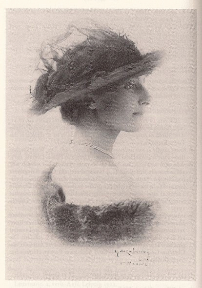
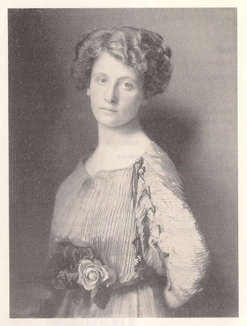

Sidonie Nádherný von Borutin
Baronównę Sidonie Nádherný von Borutin, panią na czeskich Janowicach, poznał Rilke w roku 1906, gdy razem z matką Amalie zwiedzała atelier Rodina w podparyskim Meudon. Ich znajomość oraz wymiana listów trwała nieprzerwanie aż do śmierci poety.
Sidonie Nádherný von Borutin w sierpniu 1917 roku, fot. M. de Lalaney, Genewa
Wśród obszernej korespondencji, jaką Rilke, będąc sekretarzem francuskiego rzeźbiarza, przygotowywał dla Rodina — pisze Donald Prater w biografii poety Dźwięczące szkło — znalazł się również list do baronowej Amalie Nádherný von Borutin, która zamierzała odwiedzić Meudon razem ze swą córką Sidonie. Rezydencja wiejska tej rodziny znajdowała się w Janowicach nieopodal Pragi. To właśnie pośrednio od dziada Amalie Johann Joseph Rilke nabył w roku 1806 posiadłość Kamenitz. Jego prawnuk, Rainer Maria, miał przyjemność oprowadzać obie panie po zbiorach Rodina. List, jaki Rilke napisał do Sidonie po jej wizycie w Meudon, stał się początkiem ich długoletniej korespondencji.
Sidonie Nádherný von Borutin przed rokiem 1910, fot. Benda d'Ora
„Wciąż jeszcze myśli Pan o jakichś uniwersytetach? — zapytywała Sidonie Nádherný w liście do Rilkego. — Sądzę, że Pańskim uniwersytetem powinna być Pana własna dusza, gdy nad nią się Pan skupi, zamiast nad książkami, wyniknie z tego coś najpiękniejszego i najważniejszego — z tego powstaną wiersze”.
Fragment listu Sidonie Nádherný w przekładzie W. Markowskiej